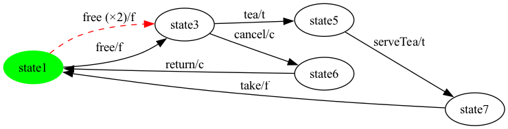
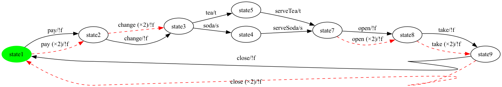
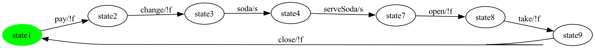
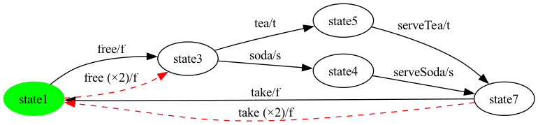
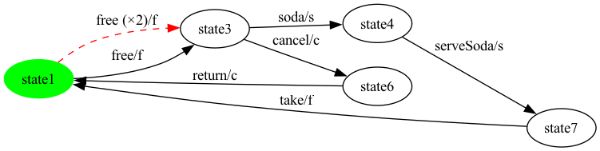
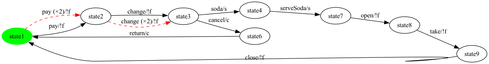
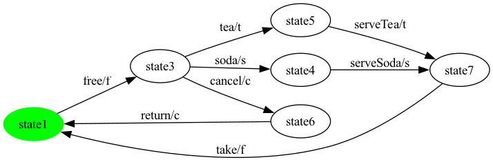
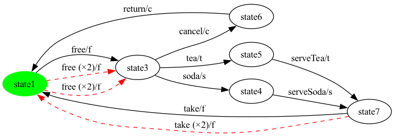
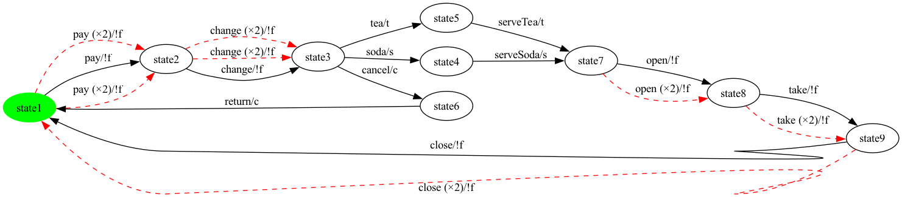
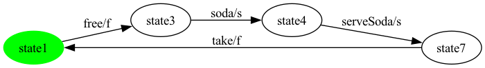

Given an SPL-level FTS plus one product configuration, the generator runs five steps. All five live in vibes-testgeneration; the orchestrator is TransitionCoverageGenerator.generate(...).
FExpressionPreservingProjection.project keeps every transition whose feature expression evaluates true under the configuration; a forward BFS from the initial state then drops unreachable states.InitialSccFilter.keepInitialScc (uses StronglyConnectedComponents for Tarjan) isolates the SCC containing the initial state.EulerianBalancer.balance runs a directed Chinese Postman: for each pair of imbalanced states it finds a shortest path of real transitions and doubles them (label suffix __dup__N); fallback to direct __balance__N when no path exists.HierholzerEulerCycle.compute walks the balanced graph with Hierholzer's algorithm, returning one contiguous transition sequence that visits every edge of the balanced graph exactly once.TestCaseSplitter.splitAtInitialReturns then splits at every visit to the initial state — each trip from initial back to initial is one operational test case. __end__ and __balance__N are hidden from the displayed sequence (synthetic reset markers); __dup__N suffixes are stripped (the action under the suffix is the real action to be re-traversed).Coverage claim (by construction). Balancing only adds edges, Hierholzer visits every edge of the balanced graph exactly once, therefore the cycle's real (non-synthetic) transitions cover 100% of the projected FTS' real transitions — a structural invariant, not an empirical observation.
Each product below shows the projected FTS (synthetic __end__ dashed-red) and the balanced FTS (Chinese-Postman doubled <action>__dup__N dashed-red). The generated all-transitions test case is listed underneath, segmented at every synthetic action.
Selected features: selected = {c, f, t}
Projected FTS: 5 states, 6 transitions (6 real / 0 __end__).
Repaired FTS: 5 states, 6 transitions (6 real / 0 __end__).
Balanced FTS: 5 states, 7 transitions (6 real / 0 __end__ / 1 __dup__ / 0 __balance__).


All-transitions coverage on the repaired FTS: 6/6 = 100.0% (7 raw cycle step(s): 6 real, 0 __end__, 1 __dup__, 0 __balance__).
Generated test cases (2 trip(s) from initial back to initial, hidden synthetics removed):
free → cancel → returnfree → tea → serveTea → takeSelected features: selected = {s, t}
Projected FTS: 8 states, 9 transitions (9 real / 0 __end__).
Repaired FTS: 8 states, 9 transitions (9 real / 0 __end__).
Balanced FTS: 8 states, 14 transitions (9 real / 0 __end__ / 5 __dup__ / 0 __balance__).


All-transitions coverage on the repaired FTS: 9/9 = 100.0% (14 raw cycle step(s): 9 real, 0 __end__, 5 __dup__, 0 __balance__).
Generated test cases (2 trip(s) from initial back to initial, hidden synthetics removed):
pay → change → tea → serveTea → open → take → closepay → change → soda → serveSoda → open → take → closeSelected features: selected = {s}
Projected FTS: 7 states, 7 transitions (7 real / 0 __end__).
Repaired FTS: 7 states, 7 transitions (7 real / 0 __end__).
Balanced FTS: 7 states, 7 transitions (7 real / 0 __end__ / 0 __dup__ / 0 __balance__).


All-transitions coverage on the repaired FTS: 7/7 = 100.0% (7 raw cycle step(s): 7 real, 0 __end__, 0 __dup__, 0 __balance__).
Generated test cases (1 trip(s) from initial back to initial, hidden synthetics removed):
pay → change → soda → serveSoda → open → take → closeSelected features: selected = {t}
Projected FTS: 7 states, 7 transitions (7 real / 0 __end__).
Repaired FTS: 7 states, 7 transitions (7 real / 0 __end__).
Balanced FTS: 7 states, 7 transitions (7 real / 0 __end__ / 0 __dup__ / 0 __balance__).


All-transitions coverage on the repaired FTS: 7/7 = 100.0% (7 raw cycle step(s): 7 real, 0 __end__, 0 __dup__, 0 __balance__).
Generated test cases (1 trip(s) from initial back to initial, hidden synthetics removed):
pay → change → tea → serveTea → open → take → closeSelected features: selected = {f, s, t}
Projected FTS: 5 states, 6 transitions (6 real / 0 __end__).
Repaired FTS: 5 states, 6 transitions (6 real / 0 __end__).
Balanced FTS: 5 states, 8 transitions (6 real / 0 __end__ / 2 __dup__ / 0 __balance__).


All-transitions coverage on the repaired FTS: 6/6 = 100.0% (8 raw cycle step(s): 6 real, 0 __end__, 2 __dup__, 0 __balance__).
Generated test cases (2 trip(s) from initial back to initial, hidden synthetics removed):
free → tea → serveTea → takefree → soda → serveSoda → takeSelected features: selected = {c, f, s}
Projected FTS: 5 states, 6 transitions (6 real / 0 __end__).
Repaired FTS: 5 states, 6 transitions (6 real / 0 __end__).
Balanced FTS: 5 states, 7 transitions (6 real / 0 __end__ / 1 __dup__ / 0 __balance__).


All-transitions coverage on the repaired FTS: 6/6 = 100.0% (7 raw cycle step(s): 6 real, 0 __end__, 1 __dup__, 0 __balance__).
Generated test cases (2 trip(s) from initial back to initial, hidden synthetics removed):
free → cancel → returnfree → soda → serveSoda → takeSelected features: selected = {c, s}
Projected FTS: 8 states, 9 transitions (9 real / 0 __end__).
Repaired FTS: 8 states, 9 transitions (9 real / 0 __end__).
Balanced FTS: 8 states, 11 transitions (9 real / 0 __end__ / 2 __dup__ / 0 __balance__).


All-transitions coverage on the repaired FTS: 9/9 = 100.0% (11 raw cycle step(s): 9 real, 0 __end__, 2 __dup__, 0 __balance__).
Generated test cases (2 trip(s) from initial back to initial, hidden synthetics removed):
pay → change → cancel → returnpay → change → soda → serveSoda → open → take → closeSelected features: selected = {f, t}
Projected FTS: 4 states, 4 transitions (4 real / 0 __end__).
Repaired FTS: 4 states, 4 transitions (4 real / 0 __end__).
Balanced FTS: 4 states, 4 transitions (4 real / 0 __end__ / 0 __dup__ / 0 __balance__).


All-transitions coverage on the repaired FTS: 4/4 = 100.0% (4 raw cycle step(s): 4 real, 0 __end__, 0 __dup__, 0 __balance__).
Generated test cases (1 trip(s) from initial back to initial, hidden synthetics removed):
free → tea → serveTea → takeSelected features: selected = {c, f, s, t}
Projected FTS: 6 states, 8 transitions (8 real / 0 __end__).
Repaired FTS: 6 states, 8 transitions (8 real / 0 __end__).
Balanced FTS: 6 states, 11 transitions (8 real / 0 __end__ / 3 __dup__ / 0 __balance__).


All-transitions coverage on the repaired FTS: 8/8 = 100.0% (11 raw cycle step(s): 8 real, 0 __end__, 3 __dup__, 0 __balance__).
Generated test cases (3 trip(s) from initial back to initial, hidden synthetics removed):
free → cancel → returnfree → tea → serveTea → takefree → soda → serveSoda → takeSelected features: selected = {c, s, t}
Projected FTS: 9 states, 11 transitions (11 real / 0 __end__).
Repaired FTS: 9 states, 11 transitions (11 real / 0 __end__).
Balanced FTS: 9 states, 18 transitions (11 real / 0 __end__ / 7 __dup__ / 0 __balance__).


All-transitions coverage on the repaired FTS: 11/11 = 100.0% (18 raw cycle step(s): 11 real, 0 __end__, 7 __dup__, 0 __balance__).
Generated test cases (3 trip(s) from initial back to initial, hidden synthetics removed):
pay → change → cancel → returnpay → change → tea → serveTea → open → take → closepay → change → soda → serveSoda → open → take → closeSelected features: selected = {c, t}
Projected FTS: 8 states, 9 transitions (9 real / 0 __end__).
Repaired FTS: 8 states, 9 transitions (9 real / 0 __end__).
Balanced FTS: 8 states, 11 transitions (9 real / 0 __end__ / 2 __dup__ / 0 __balance__).

All-transitions coverage on the repaired FTS: 9/9 = 100.0% (11 raw cycle step(s): 9 real, 0 __end__, 2 __dup__, 0 __balance__).
Generated test cases (2 trip(s) from initial back to initial, hidden synthetics removed):
pay → change → cancel → returnpay → change → tea → serveTea → open → take → closeSelected features: selected = {f, s}
Projected FTS: 4 states, 4 transitions (4 real / 0 __end__).
Repaired FTS: 4 states, 4 transitions (4 real / 0 __end__).
Balanced FTS: 4 states, 4 transitions (4 real / 0 __end__ / 0 __dup__ / 0 __balance__).


All-transitions coverage on the repaired FTS: 4/4 = 100.0% (4 raw cycle step(s): 4 real, 0 __end__, 0 __dup__, 0 __balance__).
Generated test cases (1 trip(s) from initial back to initial, hidden synthetics removed):
free → soda → serveSoda → takeTotal products: 12.